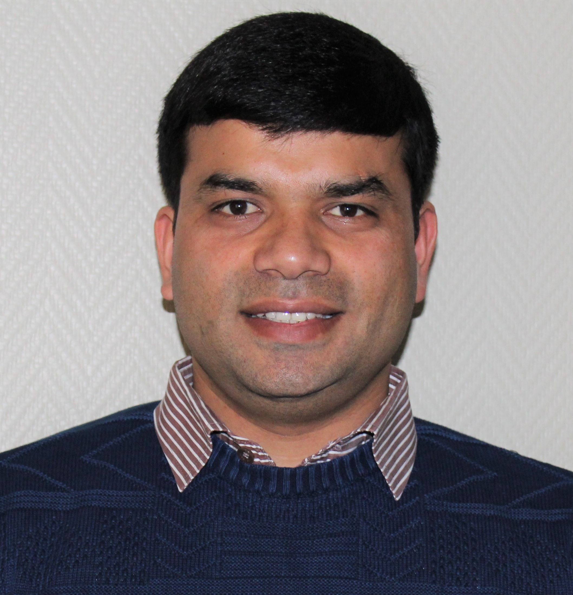

|
 |
Ajeya Naithani
Postdoctoral Researcher
ELIS – Ghent University
Technologiepark-Zwijnaarde 126
9052 Ghent, Belgium
Email: ajeya [dot] naithani [at] ugent [dot] be
|
I received my PhD degree in computer science and engineering from Ghent University in 2019, and my MS degree in computer science from the University of Arizona in 2011. Currently, I am working as a postdoctoral researcher at Ghent University. I am fortunate to work under the aegis of Professor Lieven Eeckhout.
Research
My research interests include the area of computer architecture with an emphasis on designing novel techniques to improve performance, energy-efficiency, and reliability of modern processors.
Publications
2023
Decoupled Vector Runahead
Ajeya Naithani, Jaime Roelandts, Sam Ainsworth, Timothy M. Jones, and Lieven Eeckhout
ACM/IEEE International Symposium on Microarchitecture (MICRO)
2022
Vector Runahead for Indirect Memory Accesses
Ajeya Naithani, Sam Ainsworth, Timothy M. Jones, and Lieven Eeckhout
IEEE Micro, Special Issue on Top Picks from 2021 Microarchitecture Conferences| PDF
The Forward Slice Core: A High-Performance, Yet Low-Complexity Microarchitecture
Kartik Lakshminarasimhan, Ajeya Naithani, Josue Feliu Perez, and Lieven Eeckhout
ACM Transactions on Architecture and Code Optimization (TACO)| PDF
2021
Vector Runahead
Ajeya Naithani, Sam Ainsworth, Timothy M. Jones, and Lieven Eeckhout
ACM/IEEE International Symposium on Computer Architecture (ISCA)|PDF
| Talk slides
Selected as an IEEE Micro Top Pick from 2021 for "most significant paper in computer architecture based on novelty and long-term impact"
VMT: Virtualized Multi-Threading for Accelerating Graph Workloads on Commodity Processors
Josue Feliu Perez, Ajeya Naithani, Julio Sahuquillo, Salvador Petit, Moinuddin K Qureshi, and Lieven Eeckhout
IEEE Transaction on Computers (TC)|PDF
2020
The Forward Slice Core Microarchitecture
Kartik Lakshminarasimhan, Ajeya Naithani, Josue Feliu Perez, and Lieven Eeckhout
ACM International Conference on Parallel Architectures and Compilation Techniques (PACT)|PDF
Precise Runahead Execution
Ajeya Naithani, Josue Feliu Perez, Almutaz Adileh, and Lieven Eeckhout
IEEE International Symposium on High-Performance Computer Architecture (HPCA)|PDF
| Talk slides
2019
Precise Runahead Execution
Ajeya Naithani, Josue Feliu Perez, Almutaz Adileh, and Lieven Eeckhout
IEEE Computer Architecture Letters (CAL)|PDF
2018
2017
Reliability-Aware Scheduling on Heterogeneous Multicore Processors
Ajeya Naithani, Stijn Eyerman, and Lieven Eeckhout
IEEE International Symposium on High Performance Computer Architecture (HPCA) |PDF
| Talk slides
Patents
CPU with Multiple Instruction Queues
Lieven Eeckhout, Kartik Lakshminarasimhan, and Ajeya Naithani
European Patent Application Number 20199592.5 (Pending), October 1, 2020
|